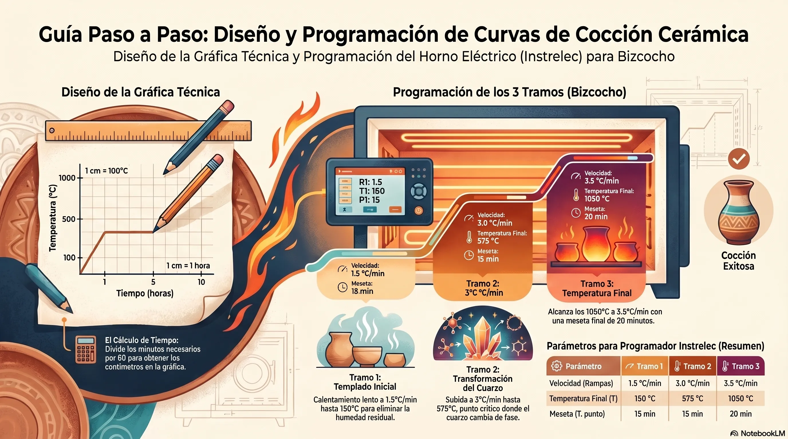

Bienvenido al compendio interactivo de Taller Arte Barro. Esta herramienta ha sido diseñada para transformar las notas técnicas, recetas químicas y observaciones de horneado en un entorno dinámico. Aquí podrá explorar las relaciones entre los materiales cerámicos, analizar el comportamiento de los óxidos y visualizar las curvas de temperatura críticas para el éxito de sus piezas. Use el menú lateral para navegar por las diferentes áreas del laboratorio.
⚠️ Recomendaciones de Seguridad
- Inhalación: Los óxidos metálicos son altamente tóxicos. Use guantes y barbijo siempre al manipular polvos.
- Contaminación: Un solo grano de óxido (ej. Cobalto) puede arruinar preparaciones enteras. Mantenga pulcritud extrema.
- Registro: Nunca prepare una muestra sin rotular y anotar la fórmula exacta en su bitácora.
💡 Principio del Taller
"En la cerámica, no hay verdades absolutas, solo pruebas horneadas."
- La experimentación es el único camino.
Engobes: La Piel del Barro
En esta sección analizaremos la composición volumétrica de los engobes. Un engobe es arcilla coloreada que se adhiere a la pieza en estado "tacto de cuero". A continuación, visualice la diferencia de proporciones entre un engobe clásico y uno formulado para vitrificar a altas temperaturas (Gres).
Engobe Básico (Baja Temp.)
Colores limpios, requiere esmalte posterior.
Engobe Vitrificable (Gres)
1180°C - 1200°C. Textura sedosa y resistente propia.
Al subir la temperatura, el esmalte añadido funde la matriz de arcilla, logrando un brillo satinado sin necesidad de cubierta posterior.
El Rol del CMC (Carboximetilcelulosa)
Para la aplicación a pincel, el CMC es el vehículo vital. Retarda el secado y nivela la capa.
- Disolver CMC en agua hasta lograr consistencia de jarabe.
- Tener listo el esmalte o engobe en polvo.
- Mezclar aproximadamente 50% de volumen de solución CMC respecto al polvo.
Catálogo de Óxidos de Transición
Interactúe con la tabla de elementos para comprender el comportamiento químico y el resultado cromático de los óxidos puros frente a los pigmentos calcinados en atmósferas de oxidación. Seleccione un elemento para visualizar su perfil.
Obtención Artesanal (Acetilación)
Seleccione un elemento
Haga clic en un óxido de la cuadrícula para ver sus propiedades cromáticas y notas técnicas.
Manual de Esmaltado Cerámico
Técnicas, Preparación y Cocción
Esta guía detalla los diversos tipos de esmaltes, sus métodos de preparación, técnicas de aplicación y procesos de horneado, basándose en las lecciones que Taller.
1. Tipos de Esmaltes según su Base y Acabado
Existen múltiples variedades de esmaltes que se diferencian por su composición química y el efecto visual que producen:
Según su base química:
- Alcalinos: Son recomendados para vajilla utilitaria (platos, tazas) ya que no son tóxicos. Suelen ser un poco más "lechosos" o apagados que los plúmbicos.
- Plúmbicos: Contienen plomo, lo que los hace más brillantes y luminosos, pero no deben usarse en piezas para alimentos. Son ideales para esculturas o floreros.
Según su transparencia y brillo:
- Transparentes: Permiten ver el color del barro o decoraciones previas (como engobes o sellos) debajo de la capa de esmalte.
- Blancos y de Color: Generalmente son cubritivos, especialmente si tienen una base de esmalte blanco brillante.
- Mates y Satinados: Se obtienen agregando componentes como alúmina (al 10%) para matar el brillo y lograr texturas satinadas, o rutilo para efectos rústicos y mates.
Con efectos especiales:
- Con Rutilo: El rutilo (óxido de titanio con algo de hierro) genera manchas, sombras y superficies irregulares muy valoradas en cerámica artística.
- Con Cristales: Se pueden crear efectos de "puntitos" o manchas fundiendo esmalte previamente, rompiéndolo en cristales y espolvoreándolo sobre una base de esmalte húmedo antes de hornear.
- Con limaduras metálicas: Agregar limadura de bronce o hierro directamente al barro o bajo el esmalte transparente genera puntos de color (dorados/negros o rojos).
2. Preparación y el uso del CMC
El esmalte suele venir en polvo y se prepara mezclándolo con agua hasta obtener una consistencia similar a la leche espesa o un yogur bebible. Para mejorar la aplicación, especialmente a pincel, se recomienda agregar CMC (Carboximetilcelulosa):
- Preparación del CMC: Se disuelven unos 3 gramos (o una cucharada) de CMC en polvo en un frasco de agua hirviendo y se deja reposar hasta el día siguiente hasta que parezca una "goma" transparente.
- Beneficios: Al agregar unas cucharadas de esta mezcla al esmalte, este se vuelve más cremoso, no se sedimenta tan rápido en el tacho, se adhiere mejor a la pieza (no se sale al tocarla) y permite que el pincel resbale suavemente sin dejar marcas.
3. Métodos de Aplicación
La elección del método depende del estado de la pieza y el efecto deseado:
Inmersión
La pieza (generalmente bizcochada) se sumerge en un recipiente grande con esmalte por 2 o 3 segundos. Es rápido pero da un color uniforme en toda la pieza.
Pincel
Ideal para piezas en monococción (crudas) o para aplicar diferentes colores en zonas específicas. Es fundamental aplicar capas gruesas (2 a 3 manos) para que el esmalte tenga cuerpo y dé el color correcto; si es muy fino, queda transparente y sin vida.
Soplete
Utiliza un compresor y pistola para lograr superficies muy parejas. Se usa frecuentemente para aplicar esmalte transparente sobre piezas ya decoradas con engobes (técnica bajo cubierta). Es vital mover siempre tanto la pistola como la pieza para evitar chorreos.
Baño interior
Consiste en llenar el interior de una pieza con esmalte, moverla para cubrir las paredes y volcar el excedente rápidamente.
4. Método y Tiempo de Horneado
Monococción vs. Bizcochado
Los esmaltes pueden aplicarse sobre piezas bizcochadas (una primera horneada previa) o directamente sobre piezas crudas y secas (monococción). La monococción ahorra tiempo y energía, y los resultados de color y textura suelen ser idénticos.
Temperaturas comunes
- Mayormente se hornean a 1060°C.
- Los esmaltes que contienen rutilo requieren una temperatura ligeramente superior, aproximadamente 1075°C, para compensar el carácter refractario del rutilo y lograr que funda correctamente.
Proceso de maduración
Una vez alcanzada la temperatura de maduración, el esmalte se ablanda como "manteca" y se "plancha" sobre la pieza, eliminando pequeñas imperfecciones de la aplicación. Se debe dejar enfriar el horno antes de sacar las muestras para evitar roturas.
Nota importante:
Antes de meter cualquier pieza al horno, es obligatorio limpiar bien la base con una esponja para que no quede esmalte en la parte que apoya, de lo contrario la pieza se pegará irremediablemente a la placa del horno.
Simulador de Curvas Térmicas
Visualice y compare los perfiles de temperatura en el tiempo. La curva gráfica ilustra la drástica diferencia entre el ascenso controlado para la monococción (eliminación de agua química) y el choque térmico instantáneo que caracteriza a la técnica Rakú.
Tipos de quemas
Métodos de Horneado y Equipamiento
1. Tipos de Hornos
La elección del horno determina el tipo de trabajo, la atmósfera y el costo operativo:
- Hornos Eléctricos: Son los más populares por ser económicos en su consumo, eficientes y fáciles de controlar electrónicamente. Su aislamiento con fibra cerámica espacial los hace muy livianos y de bajo consumo.
Limitación: Trabajan con atmósfera oxidante (con oxígeno). No se recomiendan para atmósferas reductoras, ya que la falta de oxígeno destruye la capa protectora de las resistencias metálicas, quemándolas prematuramente. - Hornos a Gas: Permiten inyectar mucha potencia rápidamente y facilitan las atmósferas reductoras.
Limitación: El calor suele ser más desparejo debido a la corriente de aire que requiere la combustión. Además, las garrafas pueden congelarse por la alta demanda y requieren quemadores con encendido y barrido automático para evitar explosiones. - Hornos a Leña / Combustibles Líquidos: Históricamente usados para jornadas de varios días. Son muy exigentes físicamente porque requieren alimentación constante y generan un gran gasto de madera, pero con la ventaja de poder reciclarlas fácilmente para su utilización.
Diseños Estructurales
Hornos Alternativos de Autogestión
- Hornallas a cielo abierto: Pozo rodeado de piedras. Las piezas se templan primero alrededor de las brasas y luego se tapan con material orgánico. Llega a unos 800°C.
- Horno de Papel: Base de ladrillos, cubierta con una estructura de papel, ramas y barbotina a modo de "cartapesta" volcánica. Alcanza 850°C-900°C.
- Horno Romano: Construido con ladrillos comunes y adobe. Posee chimenea y varias bocas para controlar el tiraje según el viento. Alcanza los 1000°C.
En todos ellos, se recomienda usar leña fina de maderas blandas (pino, álamo) para una buena oxigenación.
2. Controles, Instrumentos y Cuidado
- Controles Electrónicos y PID: Los hornos modernos utilizan controladores que permiten programar con total exactitud rampas (subidas de temperatura) y mesetas (mantenimiento de temperatura). Permiten guardar decenas de programas distintos.
- Conos Pirométricos: Triángulos de arcilla que miden el "trabajo térmico" (la suma de la temperatura y el tiempo). Se doblan cuando alcanzan su madurez y son ideales para verificar si el horno calienta de manera pareja en todos sus rincones o si el control electrónico miente.
- Protección de Placas (Estantes): Para evitar que el esmalte que gotea rompa las placas refractarias del horno, es indispensable pintarlas con una "lechada".
- Se puede usar Caolín, que al ser una arcilla se hornea y se pega a la placa, aunque con los usos múltiples tiende a descascararse y puede caer sobre las piezas de abajo.
- También se puede usar Alúmina Calcinada, que soporta altísimas temperaturas sin fundirse y queda blanca, actuando como un excelente desmoldante.

Regla de oro:
Siempre limpia con una esponja la base de tus piezas esmaltadas antes de meterlas al horno.
3. ¿Qué sucede dentro del horno durante la cocción?
El horneado no es solo secar barro; es una transformación físico-química:
Evaporación del agua absorbida (Hasta ~115°C): El agua sale en forma de vapor. Si se sube la temperatura muy rápido, el agua hierve dentro del barro y la pieza explota. Por esto es vital hornear piezas totalmente secas.
Agua Combinada (Hasta ~500°C): Se evapora lentamente el agua cristalizada en los minerales.
Transformación del Cuarzo (500°C - 600°C): El cuarzo de la pasta cambia de tamaño. Es una fase crítica donde una subida rápida puede fisurar la pieza.
Vitrificación: Las partículas alcanzan su temperatura de maduración, se agrupan y se funden formando una matriz vítrea. La pieza se contrae, se hace resistente y pierde su porosidad.
Enfriamiento y Craquelado: Si durante el enfriamiento el esmalte de la superficie se contrae más rápido que la arcilla base, se producen tensiones que rompen la capa vítrea (craquelado). Para evitarlo, a menudo se ajusta la fórmula de la pasta base (por ejemplo, agregando cuarzo).
4. Curvas y Métodos de Horneado
A. El Bizcochado Clásico (1050°C - 1060°C)
Es la primera horneada que se le da a una pieza para endurecerla y permitir una manipulación segura antes de aplicar el esmalte. Es obligatorio bizcochar las piezas finas y delicadas, pero para piezas con paredes robustas, es evitable.
C. Alta Temperatura / Gres (1180°C a 1230°C)
Para el Gres se utilizan pastas formuladas con chamote, caolín, cuarzo y feldespato. Requiere hornos capaces de alcanzar los 1180°C - 1230°C para que la pieza vitrifique por completo, dándole una dureza pétrea y un acabado muy particular y resistente.
B. Monococción (12 horas - 1050°C)
Consiste en esmaltar o engobar la pieza en estado crudo y hornearla una sola vez. Ahorra muchísimo tiempo y energía, y disminuye la manipulación de la pieza. La clave del éxito para evitar roturas es una curva extremadamente lenta:
- De 0°C a 100°C: Toma 1 hora.
- De 100°C a 220°C: Toma 3 horas más (se llega a las 4 horas de ciclo).
- De 220°C a 550°C: Se demora hasta alcanzar las 7 u 8 horas de ciclo para pasar lenta la transformación del cuarzo.
- De 550°C a 1050°C: El horno llega a temperatura tope a las 11 horas.
- Meseta superior: Se mantiene en 1050°C por 30 minutos para que el esmalte se "planche", expulse burbujas y funda parejo.
- Meseta de bajada: Desciende a 900°C y se mantiene 30 minutos más para darle estabilidad y evitar un choque térmico brusco. Luego se apaga y se deja enfriar.
D. Técnica de Rakú
Es un horneado japonés que implica choques térmicos extremos y atmósferas reductoras para lograr esmaltes craquelados, partes carbonizadas y colores tornasolados:
- Las piezas se bizcochan primero a 1050°C para darles resistencia.
- Se aplican esmaltes industriales, a los cuales se les debe agregar un fundente (como 20% de Bórax) para que se derritan a apenas 900°C.
- El horneado de esmalte es rápido (1 hora a 1 hora y media) y se sube a 900°C - 915°C.
- Se apaga el horno y la pieza se extrae al rojo vivo con pinzas de metal.
- Inmediatamente se entierra en un recipiente con aserrín, que se prende fuego al instante. Se tapa rápidamente ahogando la llama; el humo intenso penetra el craquelado y reduce los óxidos (ej. el cobre se vuelve metálico y rojizo en lugar de verde).
- Se saca del aserrín y se enfría de golpe en agua fría para detener la reducción y evitar que los metales vuelvan a oxidarse.
Glosario de Técnicas y Efectos
Explore las metodologías de aplicación y efectos superficiales especiales. Haga clic en cada pestaña para desplegar la descripción técnica, requisitos del proceso y métodos para inducir o controlar reacciones específicas en el esmalte.
Inmersión
Ideal para piezas bizcochadas. Requiere una densidad constante de la suspensión (medida con densímetro o por la prueba de "capa de uña").
Soplete / Compresor
Permite realizar degradados y capas uniformes sin contacto físico con la pieza. Uso obligatorio de mascarilla de protección.
Bajo Cubierta
Pintar sobre la pieza cruda o bizcocho con óxidos+agua. Se recubre con esmalte transparente (alcalino resalta colores, plúmbico da suavidad).
Técnica de origen japonés basada en reducción extrema y choque térmico.
- Ascenso Rápido: Llevar el horno velozmente a 900°C.
- Extracción: Sacar la pieza incandescente (al rojo vivo) con pinzas.
- Reducción: Colocar en recipiente con material combustible (aserrín, papel). Tapar herméticamente para privar de oxígeno.
- Limpieza: Sumergir en agua fría inmediatamente para fijar efectos metálicos y limpiar el carbón superficial.
Craquelado
Buscado en decoración o causado por desajuste en el coeficiente de dilatación entre pasta y esmalte.
Para evitarlo: Ajustar fórmula agregando sílice o disminuyendo fundentes alcalinos.
Texturas con Rutilo
El Rutilo (Óxido de titanio con trazas de hierro) produce manchas rústicas. Requiere subir la temperatura a 1075°C mínimo para que el efecto "rompa" la tensión del esmalte.
Macro-cristales
Requieren una matriz vítrea fluida y una curva de enfriamiento controlada (mesetas largas durante el descenso) para permitir que las estructuras cristalinas crezcan de forma visible.